twitch_data <- read.csv("twitch_data.csv")
library(gridExtra)
library(ggcorrplot)
library(tidyverse)
library(sjPlot)Twitch Statistics Project
JBP061-B-6 Statistics for Data Scientists
Mikolaj Hilgert
Mikolaj Hilgert
1. Table of Contents
2. Introduction
The goal of this analysis is to evaluate Twitch streamer data and make strategic recommendations for a content creator looking to succeed on the platform. The goal is to assist the content creator in making informed decisions and improving the performance of their Twitch channel.
Should there be a focus on mature content (18+) audience? What are the consequences one decides to do so in terms of audience reactions?
Does this choice lower or increase the chance of becoming a Twitch partner?
Is the effect of the stream minutes larger or smaller in mature content?
3. Data Description
Loading of our data-set and all the relevant libraries
We will first inspect the raw data set, such that we can take a look at the data we are working with. From this we can see the columns.
head(twitch_data, 4) Channel Watch.time.Minutes. Stream.time.minutes. Peak.viewers
1 xQcOW 6196161750 215250 222720
2 summit1g 6091677300 211845 310998
3 Gaules 5644590915 515280 387315
4 ESL_CSGO 3970318140 517740 300575
Average.viewers Followers Followers.gained Views.gained Partnered Mature
1 27716 3246298 1734810 93036735 True False
2 25610 5310163 1370184 89705964 True False
3 10976 1767635 1023779 102611607 True True
4 7714 3944850 703986 106546942 True False
Language
1 English
2 English
3 Portuguese
4 EnglishWe want to firstly check if there are any missing/null values present in our data set.
print(any(sapply(twitch_data, is.null)))[1] FALSEFrom this, we can see that there is no missing data in any of the columns. As such, this means that we do not have to do much preliminary data cleaning.
The raw column names are in need of renaming for more consistency and future ease of access:
twitch_data <- twitch_data %>%
rename(Watch.time.hours = Watch.time.Minutes.,
Stream.time.hours = Stream.time.minutes.,
Followers.delta = Followers.gained) %>%
mutate(
Watch.time.hours = Watch.time.hours / 60,
Stream.time.hours = Stream.time.hours / 60
)4. Exploratory Data Analysis (EDA)
We can firstly take a look at the summary statistics of our data set.
summary(twitch_data) Channel Watch.time.hours Stream.time.hours Peak.viewers
Length:1000 Min. : 2036548 Min. : 57.75 Min. : 496
Class :character 1st Qu.: 2719832 1st Qu.:1229.31 1st Qu.: 9114
Mode :character Median : 3916513 Median :1804.00 Median : 16676
Mean : 6973799 Mean :2008.59 Mean : 37065
3rd Qu.: 7228999 3rd Qu.:2364.06 3rd Qu.: 37570
Max. :103269362 Max. :8690.75 Max. :639375
Average.viewers Followers Followers.delta Views.gained
Min. : 235 Min. : 3660 Min. : -15772 Min. : 175788
1st Qu.: 1458 1st Qu.: 170546 1st Qu.: 43758 1st Qu.: 3880602
Median : 2425 Median : 318063 Median : 98352 Median : 6456324
Mean : 4781 Mean : 570054 Mean : 205519 Mean : 11668166
3rd Qu.: 4786 3rd Qu.: 624332 3rd Qu.: 236131 3rd Qu.: 12196762
Max. :147643 Max. :8938903 Max. :3966525 Max. :670137548
Partnered Mature Language
Length:1000 Length:1000 Length:1000
Class :character Class :character Class :character
Mode :character Mode :character Mode :character
These values provide an overview of the range, central tendency, and distribution of the metrics in the data set. Further analysis can provide deeper insights into relationships, trends, and patterns within the data.
One thing we can also already notice is that we have both numerical and nominal values. As such we can already split them up for convenience.
numeric <- twitch_data %>%
select_if(is.numeric)
nominal <- twitch_data %>%
select_if(negate(is.numeric))
head(numeric) Watch.time.hours Stream.time.hours Peak.viewers Average.viewers Followers
1 103269363 3587.50 222720 27716 3246298
2 101527955 3530.75 310998 25610 5310163
3 94076515 8588.00 387315 10976 1767635
4 66171969 8629.00 300575 7714 3944850
5 61183335 2061.00 285644 29602 8938903
6 61146651 1371.00 263720 42414 1563438
Followers.delta Views.gained
1 1734810 93036735
2 1370184 89705964
3 1023779 102611607
4 703986 106546942
5 2068424 78998587
6 554201 61715781head(nominal) Channel Partnered Mature Language
1 xQcOW True False English
2 summit1g True False English
3 Gaules True True Portuguese
4 ESL_CSGO True False English
5 Tfue True False English
6 Asmongold True False EnglishTo gain some initial insight into the top performing Streamers on the platform, we can take a look at the top 10 Streamers by watch-time, as well as showing whether they are Mature or not.

We can look at another success metric of average viewers.

We may also take a look at the correlation between our numerical variables to see if there is any relationship we can observe.
ggcorrplot(cor(numeric), lab = TRUE, type = "lower", outline.col = "white",
hc.order = TRUE)
Seeing this, We can consider the following 3 interesting insights gained from the matrix, though it must be kept in mind that correlation does not necessarily imply causation.
- Watch time hours have a strong positive correlation with followers (0.6202), meaning as watch time increases, follower count tends to increase as well.
- Peak viewers have a strong positive correlation with average viewers (0.6826), suggesting that higher peak viewership is associated with higher average viewership.
- Followers have a strong positive correlation with followers delta (0.7156), indicating that as the number of followers increases, the growth rate in followers also tends to increase.
We can also take a look at how much of our data set are mature streamers for some insight.
sprintf(
"%.2f%% of streamers in the top 1000 stream to a mature audience.",
nrow(twitch_data %>% filter(Mature == 'True')) / nrow(twitch_data) * 100
)[1] "23.00% of streamers in the top 1000 stream to a mature audience."sprintf(
"Of that 23%%, %.2f%% of streamers that stream to a mature audience are also partnered.",
nrow(twitch_data %>% filter(Mature == 'True', Partnered == 'True')) / nrow(twitch_data %>% filter(Mature == 'True')) * 100
)[1] "Of that 23%, 97.83% of streamers that stream to a mature audience are also partnered."Another important nominal variable to explore is, one of language in which the streamer streams:
twitch_data %>%
group_by(Language) %>%
summarize(Count = n()) %>%
ggplot(aes(x = reorder(Language, -Count), y = Count)) +
geom_bar(stat = "identity") +
labs(x = "Language", y = "Count") +
coord_flip()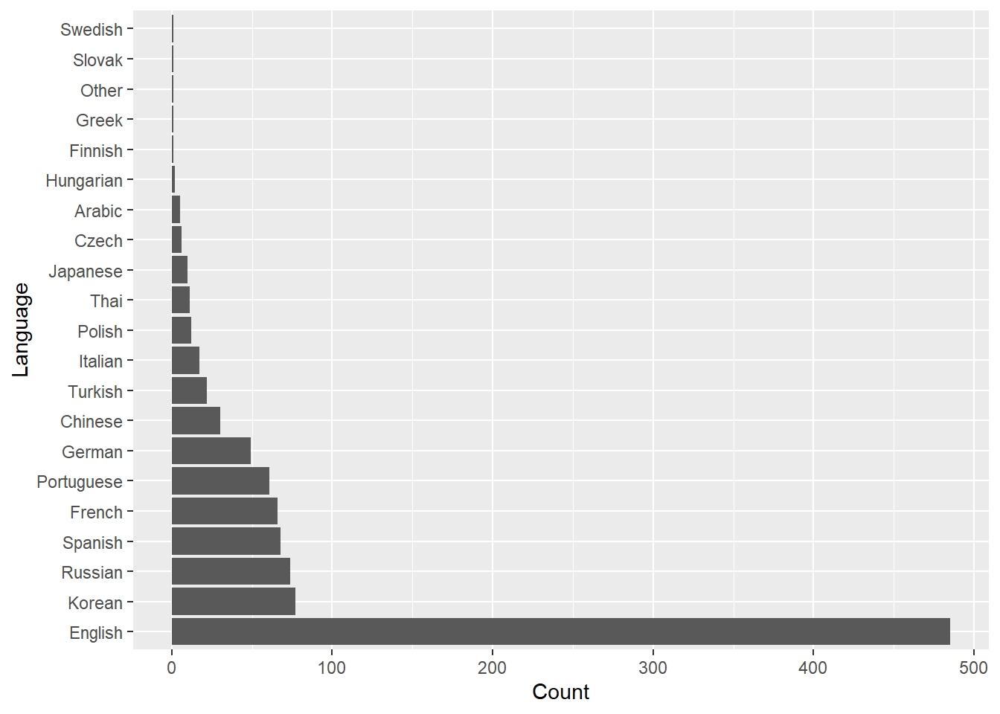
From this, we can see that nearly half of the top 1000 streamers, stream in the English language. This can be potentially an important indicator of success. This however can be immediately seen two ways, in one, more English speaking channels make it to the top 1000. This also means that there may be a lot more competition in this language!
# create a list of ggplot objects for each column
plots <- lapply(names(numeric), function(col) {
ggplot(numeric, aes(x = !!sym(col))) +
geom_density() +
ggtitle(col) +
theme(plot.title = element_text(size = 12, face = "bold", hjust = 0.5)) +
scale_x_continuous(labels = scales::comma)
})
# plot the list of ggplot objects in a grid
grid.arrange(grobs = plots, ncol = 3)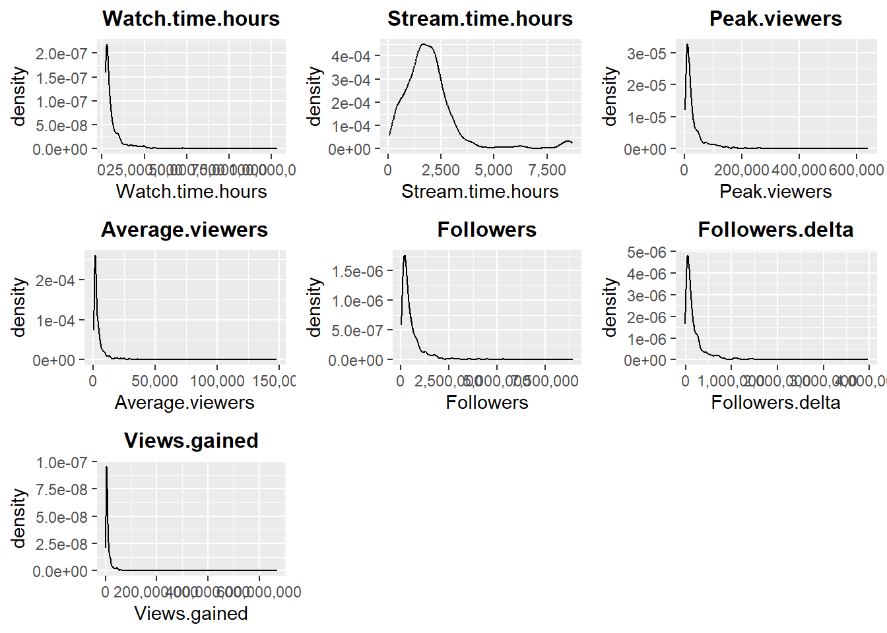
From the plots above, we can clearly see that all of our data is extremely positively skewed, which means that our Mode and Median are quite a bit larger than the Mean. This can be explained by the fact that there are not that many streamers with extremely high values (e.g., watch time, viewers, or followers) compared to the majority of other channels. This can be observed in all wakes of society, for example income.
5. Statistical Analysis
# Convert 'Language' columns to factor type
twitch_data$Language <- as.factor(twitch_data$Language)
# Check the updated types of all columns
sapply(twitch_data, class) Channel Watch.time.hours Stream.time.hours Peak.viewers
"character" "numeric" "numeric" "integer"
Average.viewers Followers Followers.delta Views.gained
"integer" "integer" "integer" "integer"
Partnered Mature Language
"character" "character" "factor" model <- lm(
Average.viewers ~ (Watch.time.hours + Stream.time.hours +
Peak.viewers + Followers + Followers.delta +
Views.gained + Partnered + Language) * Mature,
data = twitch_data
)
summary(model)
Call:
lm(formula = Average.viewers ~ (Watch.time.hours + Stream.time.hours +
Peak.viewers + Followers + Followers.delta + Views.gained +
Partnered + Language) * Mature, data = twitch_data)
Residuals:
Min 1Q Median 3Q Max
-39862 -1076 -235 703 100240
Coefficients: (7 not defined because of singularities)
Estimate Std. Error t value Pr(>|t|)
(Intercept) 2.485e+03 3.019e+03 0.823 0.41063
Watch.time.hours 1.718e-04 3.654e-05 4.701 2.97e-06 ***
Stream.time.hours -1.156e+00 1.557e-01 -7.426 2.49e-13 ***
Peak.viewers 8.731e-02 4.336e-03 20.134 < 2e-16 ***
Followers -1.146e-03 4.065e-04 -2.820 0.00490 **
Followers.delta 2.687e-03 8.894e-04 3.022 0.00258 **
Views.gained -3.038e-06 8.915e-06 -0.341 0.73337
PartneredTrue -1.959e+03 1.501e+03 -1.305 0.19214
LanguageChinese 4.012e+03 2.928e+03 1.370 0.17092
LanguageCzech 2.213e+03 4.254e+03 0.520 0.60301
LanguageEnglish 2.353e+03 2.633e+03 0.894 0.37175
LanguageFinnish 4.505e+03 7.014e+03 0.642 0.52083
LanguageFrench 1.888e+03 2.737e+03 0.690 0.49043
LanguageGerman 2.212e+03 2.793e+03 0.792 0.42858
LanguageGreek 2.572e+03 6.368e+03 0.404 0.68637
LanguageHungarian 7.518e+02 6.367e+03 0.118 0.90603
LanguageItalian 1.668e+03 2.987e+03 0.558 0.57676
LanguageJapanese 3.923e+03 3.204e+03 1.224 0.22107
LanguageKorean 3.099e+03 2.703e+03 1.147 0.25185
LanguageOther 1.426e+03 6.568e+03 0.217 0.82821
LanguagePolish 2.215e+03 3.148e+03 0.704 0.48186
LanguagePortuguese 1.680e+03 2.752e+03 0.610 0.54175
LanguageRussian 2.735e+03 2.715e+03 1.007 0.31398
LanguageSlovak 2.940e+03 6.371e+03 0.461 0.64455
LanguageSpanish 7.574e+02 2.711e+03 0.279 0.78003
LanguageSwedish 3.125e+03 6.987e+03 0.447 0.65477
LanguageThai 2.714e+03 3.331e+03 0.815 0.41545
LanguageTurkish 2.454e+03 2.983e+03 0.823 0.41079
MatureTrue -5.989e+02 4.328e+03 -0.138 0.88998
Watch.time.hours:MatureTrue 2.033e-04 1.554e-04 1.308 0.19114
Stream.time.hours:MatureTrue 9.146e-02 4.179e-01 0.219 0.82684
Peak.viewers:MatureTrue -6.848e-02 1.290e-02 -5.307 1.38e-07 ***
Followers:MatureTrue 3.864e-03 1.278e-03 3.025 0.00256 **
Followers.delta:MatureTrue 7.383e-04 3.611e-03 0.204 0.83803
Views.gained:MatureTrue -2.273e-04 1.497e-04 -1.518 0.12936
PartneredTrue:MatureTrue 3.573e+02 3.137e+03 0.114 0.90934
LanguageChinese:MatureTrue 6.311e+02 3.701e+03 0.171 0.86463
LanguageCzech:MatureTrue 9.852e+02 5.544e+03 0.178 0.85900
LanguageEnglish:MatureTrue -1.013e+02 3.025e+03 -0.034 0.97328
LanguageFinnish:MatureTrue NA NA NA NA
LanguageFrench:MatureTrue 6.897e+02 3.346e+03 0.206 0.83675
LanguageGerman:MatureTrue 1.170e+03 3.457e+03 0.339 0.73497
LanguageGreek:MatureTrue NA NA NA NA
LanguageHungarian:MatureTrue 2.098e+03 8.690e+03 0.241 0.80926
LanguageItalian:MatureTrue 9.997e+02 6.656e+03 0.150 0.88065
LanguageJapanese:MatureTrue NA NA NA NA
LanguageKorean:MatureTrue 1.871e+03 6.554e+03 0.285 0.77533
LanguageOther:MatureTrue NA NA NA NA
LanguagePolish:MatureTrue 1.364e+03 6.726e+03 0.203 0.83938
LanguagePortuguese:MatureTrue 1.372e+03 3.418e+03 0.401 0.68830
LanguageRussian:MatureTrue 1.737e+03 3.559e+03 0.488 0.62558
LanguageSlovak:MatureTrue NA NA NA NA
LanguageSpanish:MatureTrue 1.223e+03 3.501e+03 0.349 0.72701
LanguageSwedish:MatureTrue NA NA NA NA
LanguageThai:MatureTrue 1.256e+03 4.884e+03 0.257 0.79705
LanguageTurkish:MatureTrue NA NA NA NA
---
Signif. codes: 0 '***' 0.001 '**' 0.01 '*' 0.05 '.' 0.1 ' ' 1
Residual standard error: 5804 on 951 degrees of freedom
Multiple R-squared: 0.5512, Adjusted R-squared: 0.5286
F-statistic: 24.34 on 48 and 951 DF, p-value: < 2.2e-16plot(model)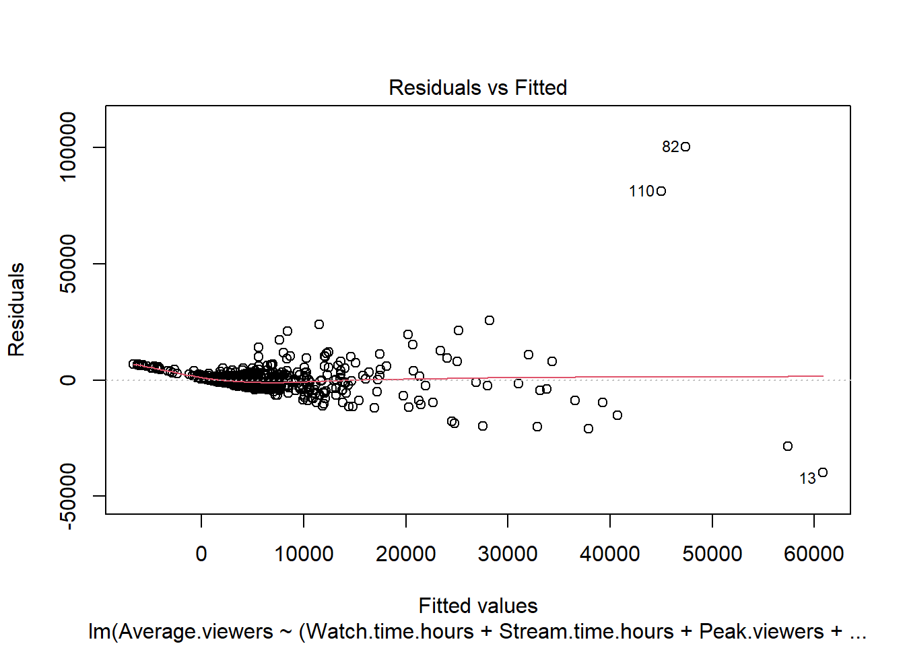
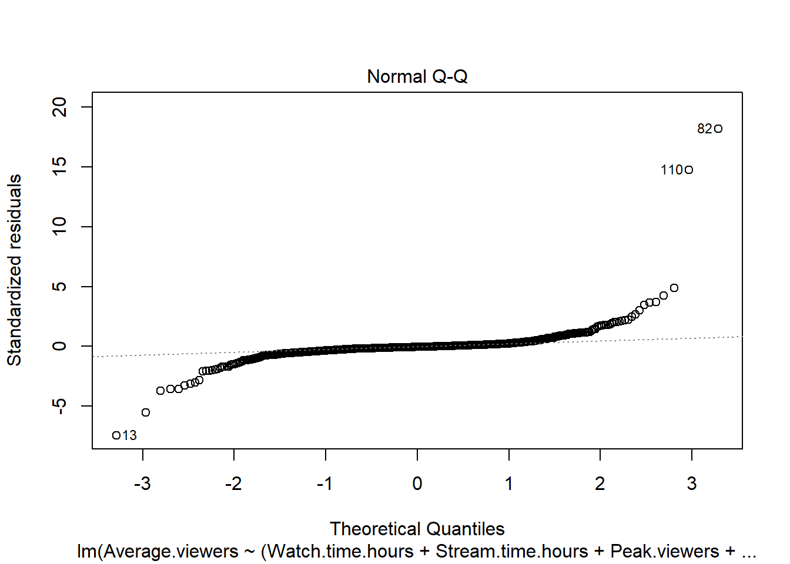
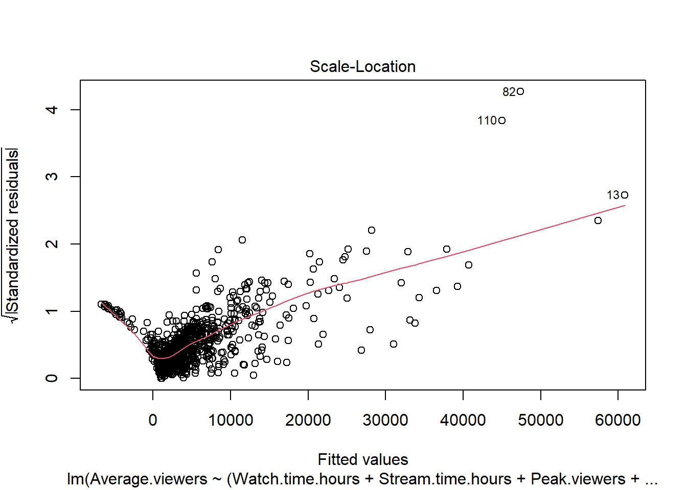
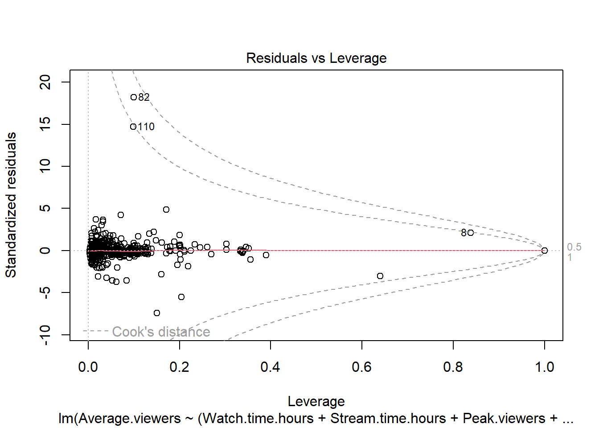
plot_model(model, type="int")[[1]]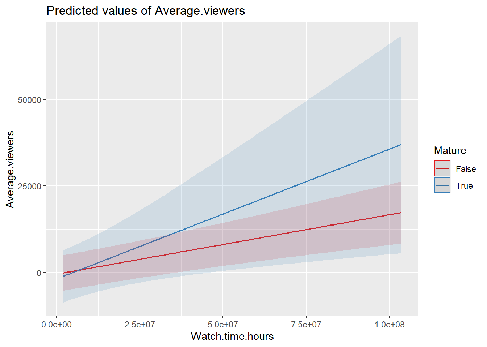
[[2]]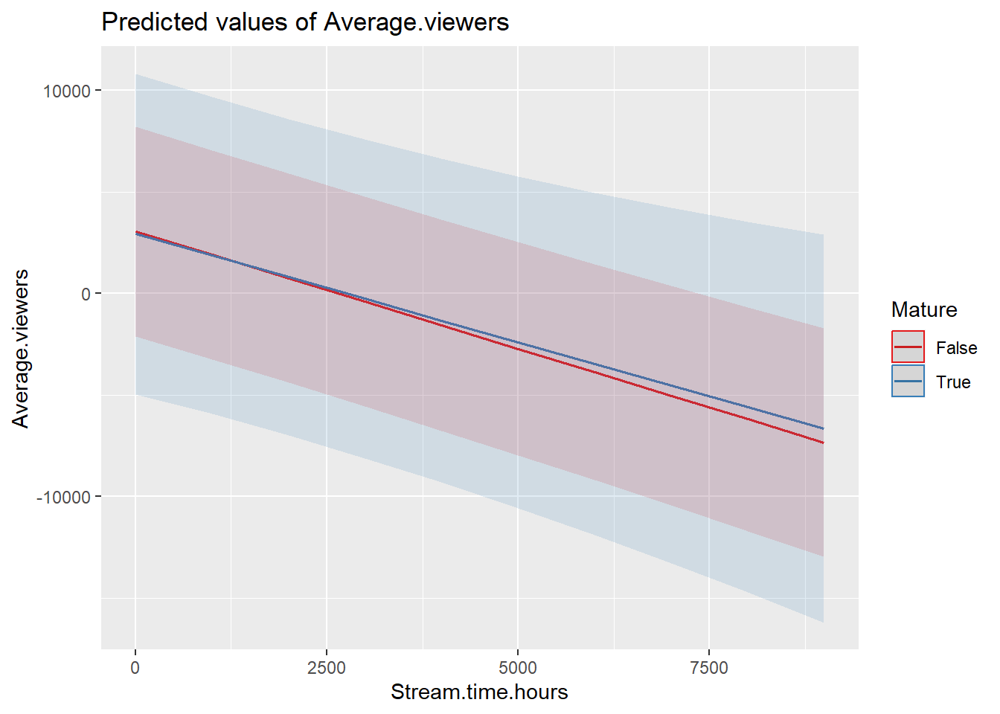
[[3]]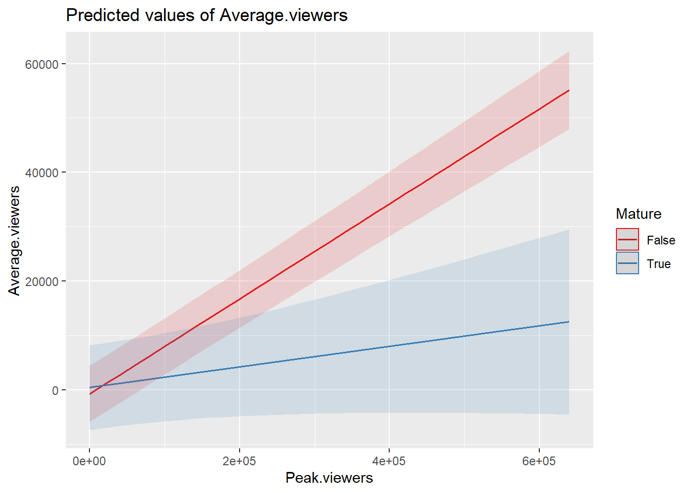
[[4]]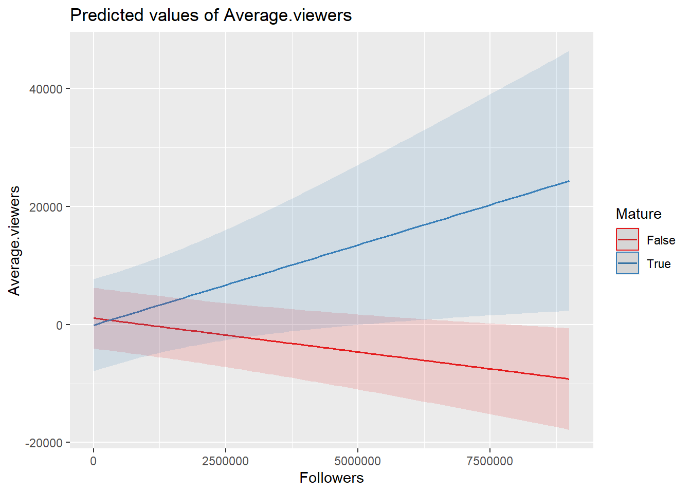
[[5]]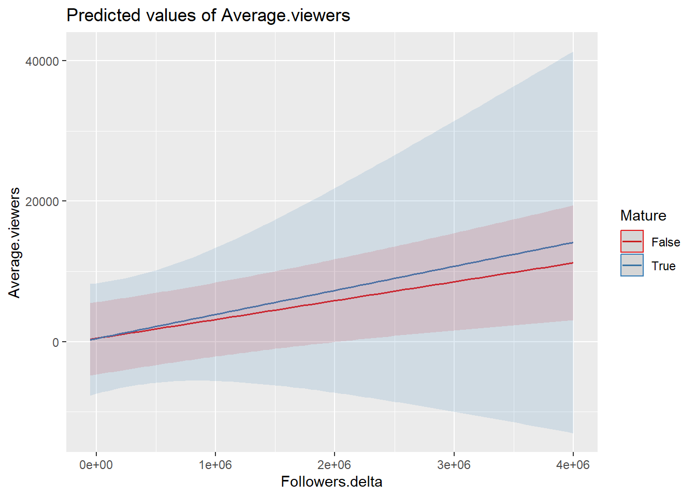
[[6]]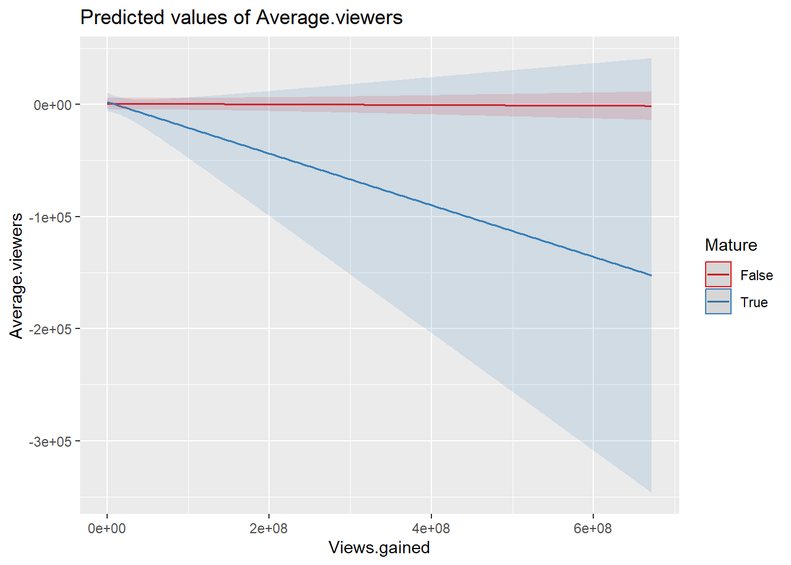
[[7]]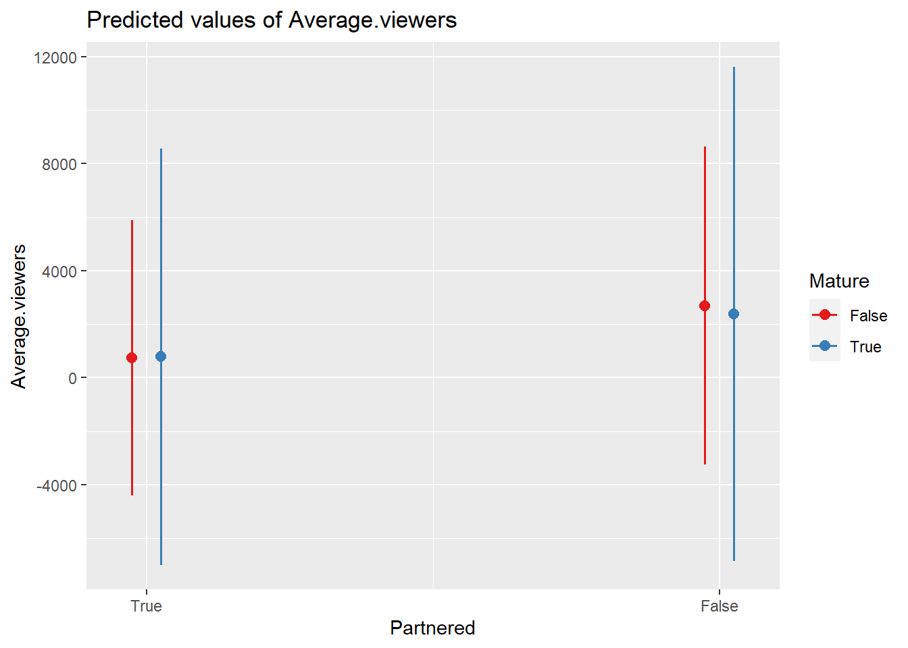
[[8]]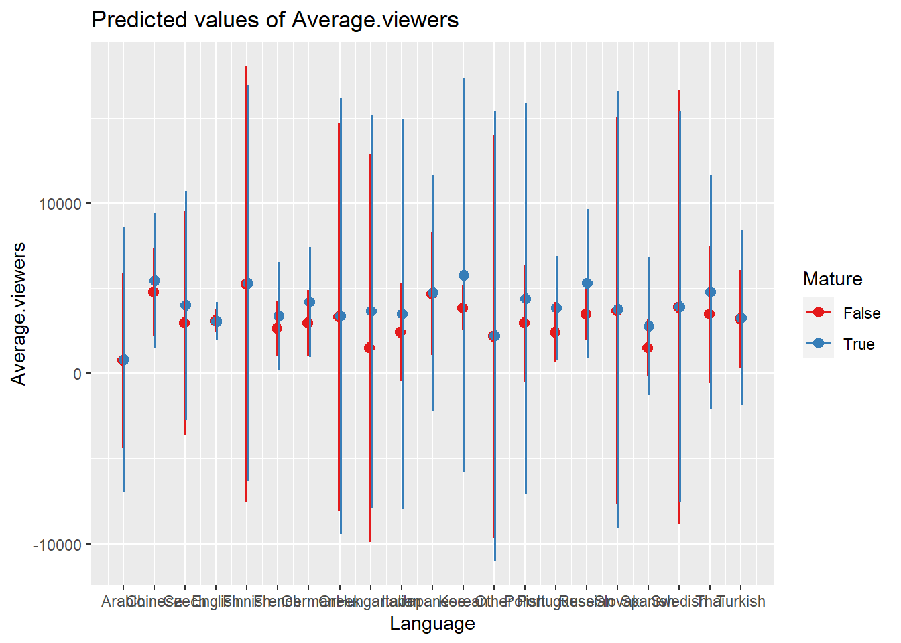
log_twitch_data <- data.frame(
Watch.time.hours = log(twitch_data$Watch.time.hours),
Stream.time.hours = log(twitch_data$Stream.time.hours),
Peak.viewers = log(twitch_data$Peak.viewers),
Followers = log(twitch_data$Followers),
Followers.delta = log(twitch_data$Followers.delta),
Views.gained = log(twitch_data$Views.gained),
Average.viewers = log(twitch_data$Average.viewers),
Partnered = twitch_data$Partnered,
Mature = twitch_data$Mature,
Language = twitch_data$Language,
Channel = twitch_data$Channel
)
model <- lm(
Average.viewers ~ (Watch.time.hours + Stream.time.hours +
Peak.viewers + Followers + Followers.delta +
Views.gained + Partnered + Language) * Mature,
data = log_twitch_data
)
summary(model)
Call:
lm(formula = Average.viewers ~ (Watch.time.hours + Stream.time.hours +
Peak.viewers + Followers + Followers.delta + Views.gained +
Partnered + Language) * Mature, data = log_twitch_data)
Residuals:
Min 1Q Median 3Q Max
-0.91704 -0.02713 0.01053 0.04635 0.58728
Coefficients: (7 not defined because of singularities)
Estimate Std. Error t value Pr(>|t|)
(Intercept) 0.003442 0.100937 0.034 0.97281
Watch.time.hours 1.002415 0.010676 93.898 < 2e-16 ***
Stream.time.hours -0.986327 0.007869 -125.346 < 2e-16 ***
Peak.viewers -0.027230 0.006521 -4.176 3.25e-05 ***
Followers 0.020898 0.006612 3.160 0.00162 **
Followers.delta -0.010013 0.005368 -1.865 0.06244 .
Views.gained 0.004537 0.007213 0.629 0.52953
PartneredTrue -0.014760 0.028728 -0.514 0.60752
LanguageChinese -0.113268 0.056970 -1.988 0.04708 *
LanguageCzech -0.350775 0.080641 -4.350 1.51e-05 ***
LanguageEnglish -0.150572 0.049985 -3.012 0.00266 **
LanguageFinnish -0.201777 0.132330 -1.525 0.12764
LanguageFrench -0.116418 0.051850 -2.245 0.02498 *
LanguageGerman -0.160582 0.053095 -3.024 0.00256 **
LanguageGreek -0.040560 0.120010 -0.338 0.73546
LanguageHungarian -0.164053 0.119592 -1.372 0.17046
LanguageItalian -0.138368 0.056781 -2.437 0.01500 *
LanguageJapanese -0.136639 0.061303 -2.229 0.02605 *
LanguageKorean -0.106602 0.051901 -2.054 0.04026 *
LanguageOther -0.204952 0.125298 -1.636 0.10223
LanguagePolish -0.171919 0.059962 -2.867 0.00423 **
LanguagePortuguese -0.112324 0.052143 -2.154 0.03148 *
LanguageRussian -0.130038 0.052216 -2.490 0.01293 *
LanguageSlovak -0.100749 0.120053 -0.839 0.40157
LanguageSpanish -0.120803 0.051257 -2.357 0.01864 *
LanguageSwedish -0.234400 0.132519 -1.769 0.07725 .
LanguageThai -0.089289 0.063717 -1.401 0.16144
LanguageTurkish -0.149492 0.056751 -2.634 0.00857 **
MatureTrue -0.310535 0.221428 -1.402 0.16112
Watch.time.hours:MatureTrue 0.041448 0.025677 1.614 0.10682
Stream.time.hours:MatureTrue 0.002393 0.018493 0.129 0.89706
Peak.viewers:MatureTrue -0.038470 0.013438 -2.863 0.00429 **
Followers:MatureTrue -0.003272 0.014666 -0.223 0.82352
Followers.delta:MatureTrue 0.019661 0.010280 1.912 0.05611 .
Views.gained:MatureTrue -0.002898 0.025592 -0.113 0.90987
PartneredTrue:MatureTrue -0.013863 0.058751 -0.236 0.81351
LanguageChinese:MatureTrue -0.110172 0.071317 -1.545 0.12272
LanguageCzech:MatureTrue 0.111143 0.103943 1.069 0.28522
LanguageEnglish:MatureTrue -0.077658 0.056415 -1.377 0.16898
LanguageFinnish:MatureTrue NA NA NA NA
LanguageFrench:MatureTrue -0.103414 0.062384 -1.658 0.09771 .
LanguageGerman:MatureTrue -0.059605 0.064026 -0.931 0.35212
LanguageGreek:MatureTrue NA NA NA NA
LanguageHungarian:MatureTrue 0.003629 0.162868 0.022 0.98223
LanguageItalian:MatureTrue -0.133748 0.124552 -1.074 0.28317
LanguageJapanese:MatureTrue NA NA NA NA
LanguageKorean:MatureTrue -0.108195 0.125428 -0.863 0.38857
LanguageOther:MatureTrue NA NA NA NA
LanguagePolish:MatureTrue -0.041295 0.126446 -0.327 0.74406
LanguagePortuguese:MatureTrue -0.105210 0.062829 -1.675 0.09435 .
LanguageRussian:MatureTrue -0.093421 0.067091 -1.392 0.16411
LanguageSlovak:MatureTrue NA NA NA NA
LanguageSpanish:MatureTrue -0.108317 0.064636 -1.676 0.09411 .
LanguageSwedish:MatureTrue NA NA NA NA
LanguageThai:MatureTrue -0.115995 0.092193 -1.258 0.20864
LanguageTurkish:MatureTrue NA NA NA NA
---
Signif. codes: 0 '***' 0.001 '**' 0.01 '*' 0.05 '.' 0.1 ' ' 1
Residual standard error: 0.1087 on 948 degrees of freedom
(3 observations deleted due to missingness)
Multiple R-squared: 0.9867, Adjusted R-squared: 0.986
F-statistic: 1467 on 48 and 948 DF, p-value: < 2.2e-16plot(model)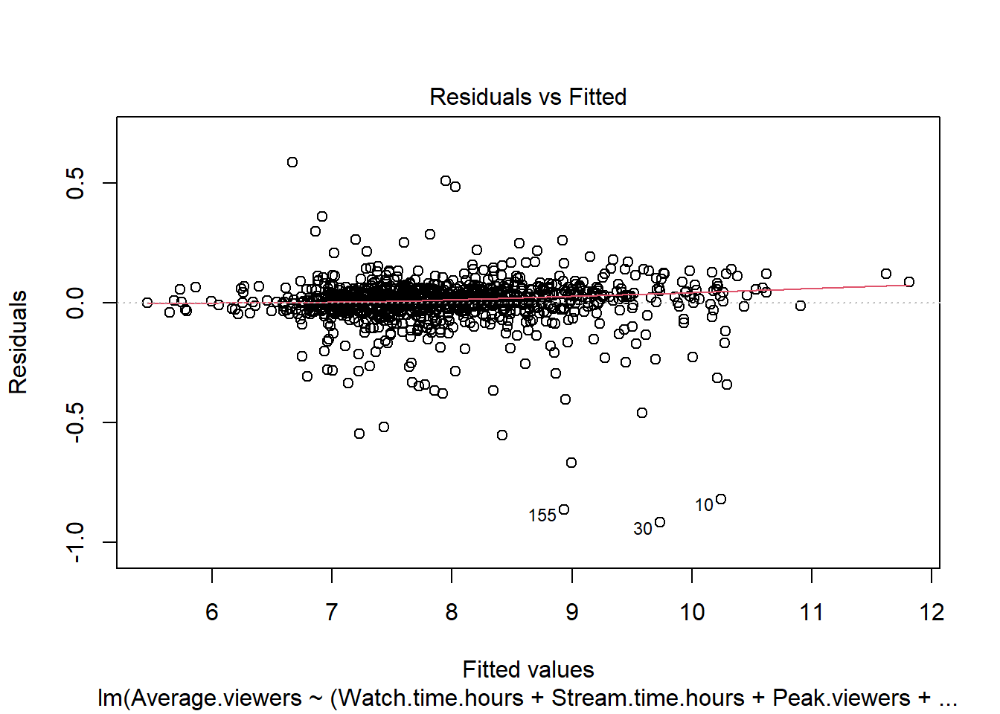
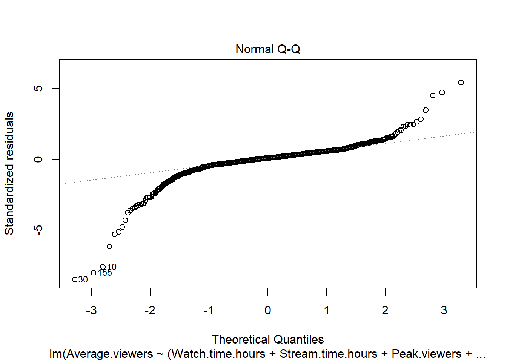
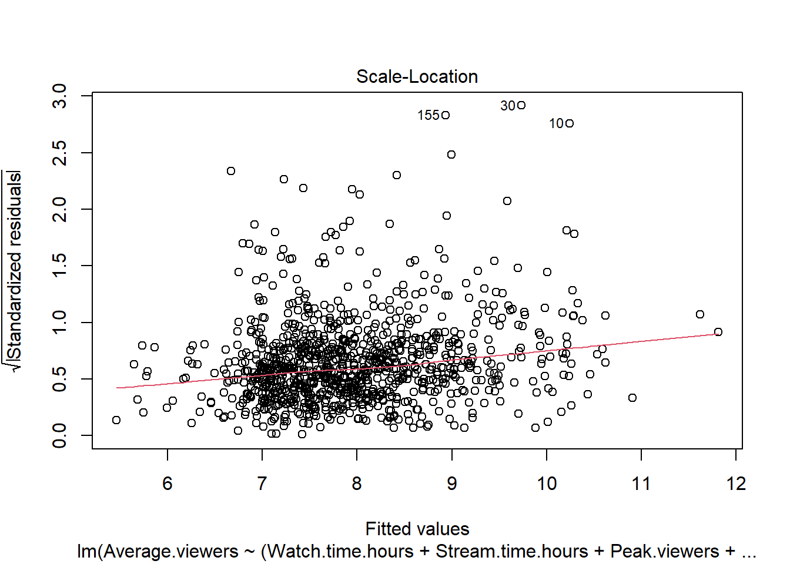
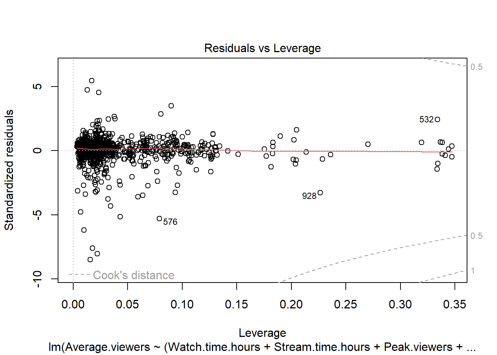